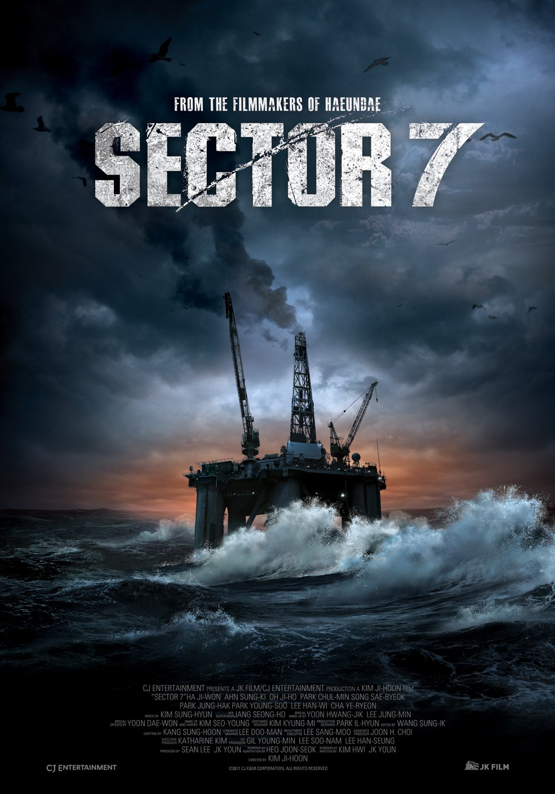
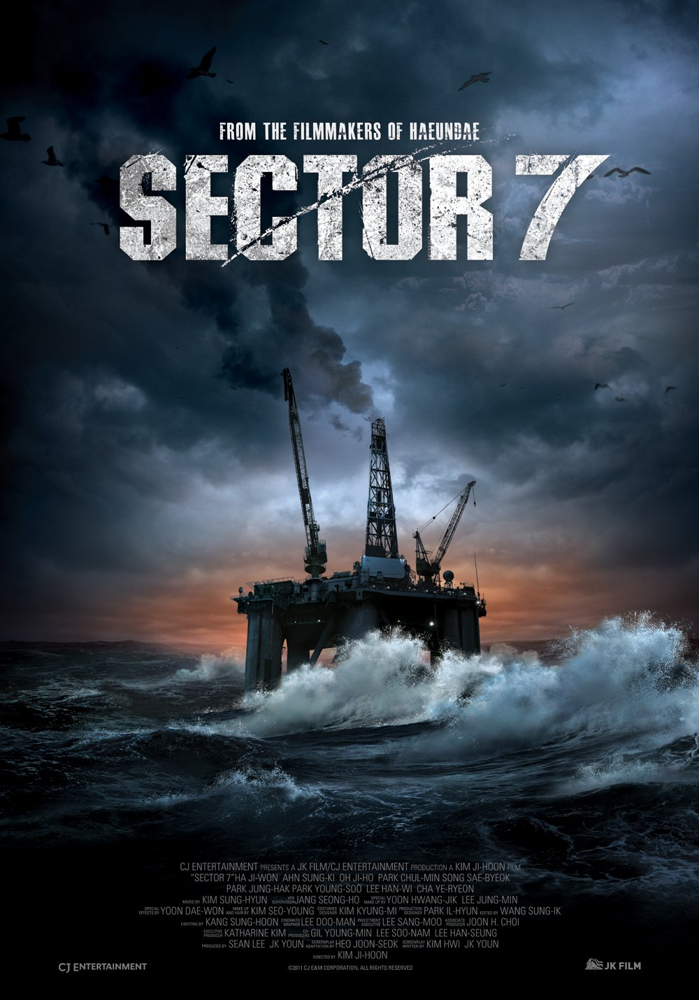
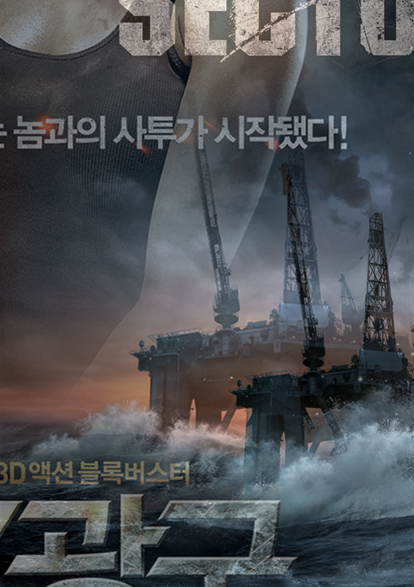
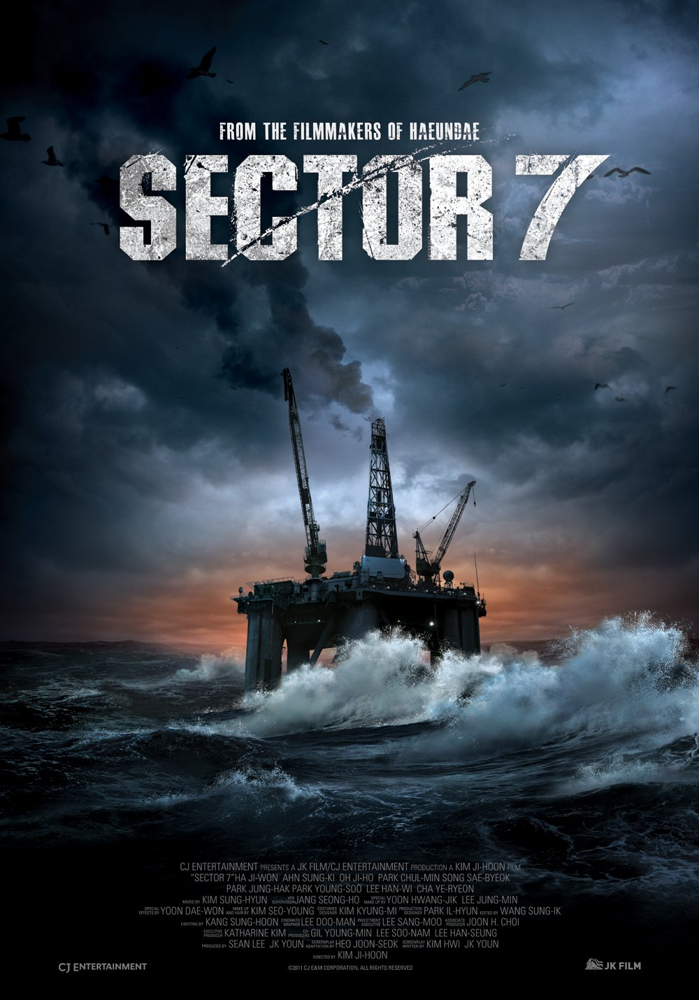

Sector 7
Kim Ji-hoon
A small team of oil rig workers are searching for undiscovered oil at the oil rig Sector 7, off the coast of Jeju Island. After the tension builds from countless failures, the main character Hae-joon's uncle returns with the hope of searching the untapped wells of oil. What they don't realize is that he has a much different motive. Working together with a researcher on board the rig, he plans to breed a newly discovered life-form whose bodily fluids can burn for longer than 30 hours, as a new form of fuel instead of oil.
But tragedy strikes as the specimen escapes with deaths of the researcher, the doctor, and another worker to follow. With the loss of the main power, the workers become stranded as the creature begins to hunt for its next meal. Armed with nothing but a few guns and the knowledge of the creature's minor susceptibility to flame, the remaining workers must work together to kill the beast before it hunts them down one by one, and escape the oil rig. But with its incredible speed (despite its size), its lightning fast, spear-like tongue, and its nearly impenetrable hide, they may not stand a chance.
The Korean version of the poster features a large image of the three main actors of the film. The text on the center reads, "The battle with the unavoidable begins!" There is an image of the tower above the ocean on the poster, which is the main setting of the film. The U.S. version of the poster features enlarged image of the same tower in the Korean poster. The U.S. poster tends to focus on the setting more than the actors, because the actors are not familiar to foriegn audience.